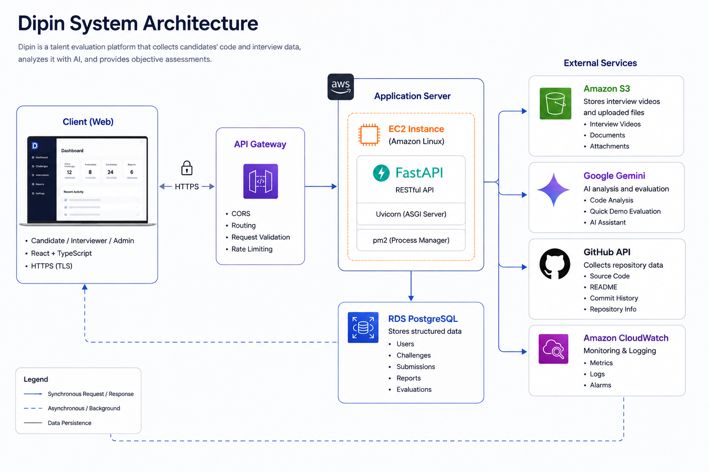
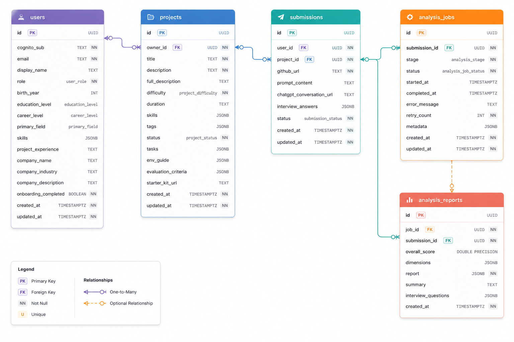
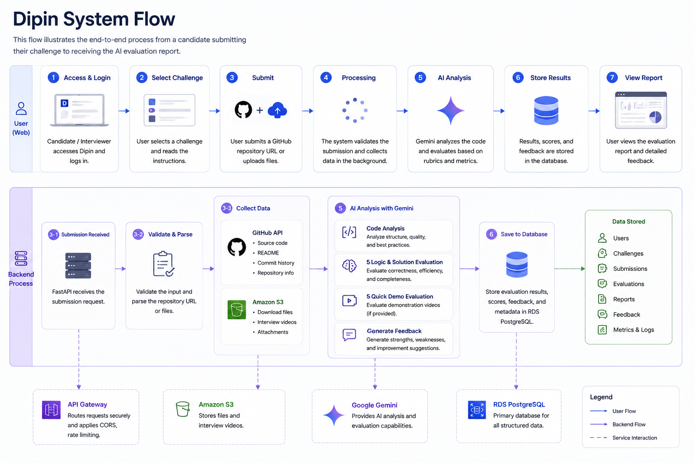
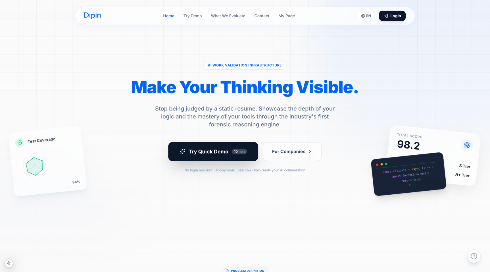
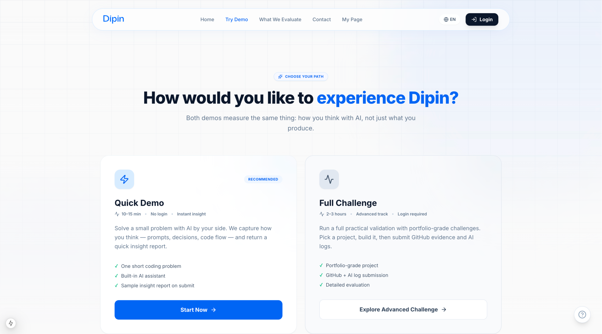
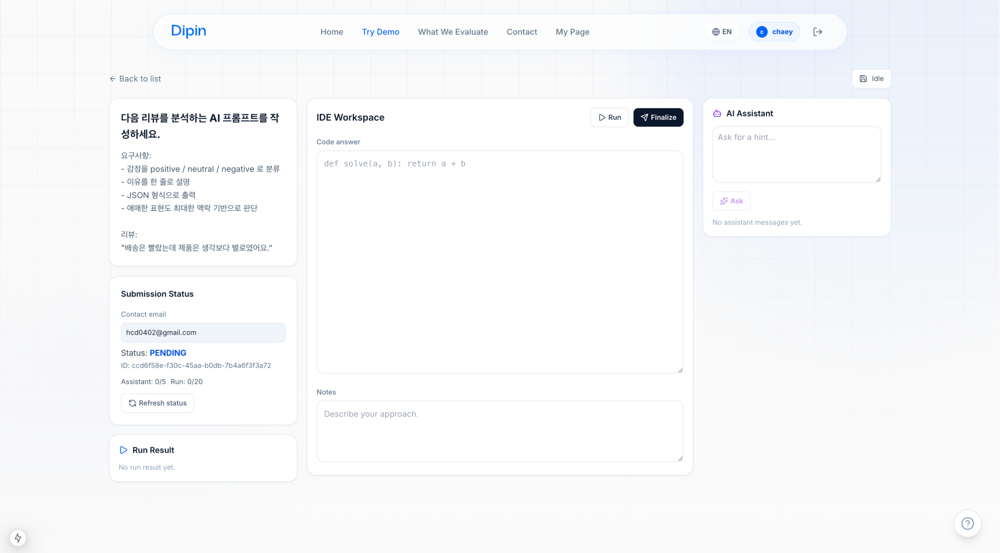
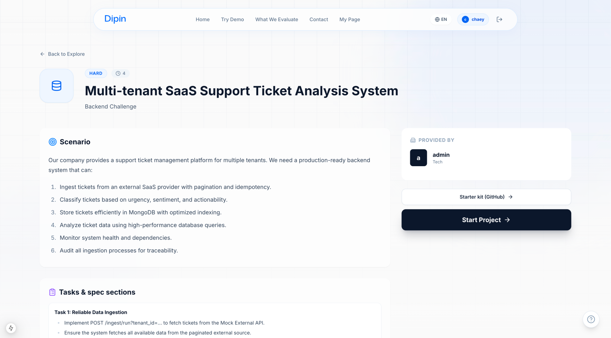
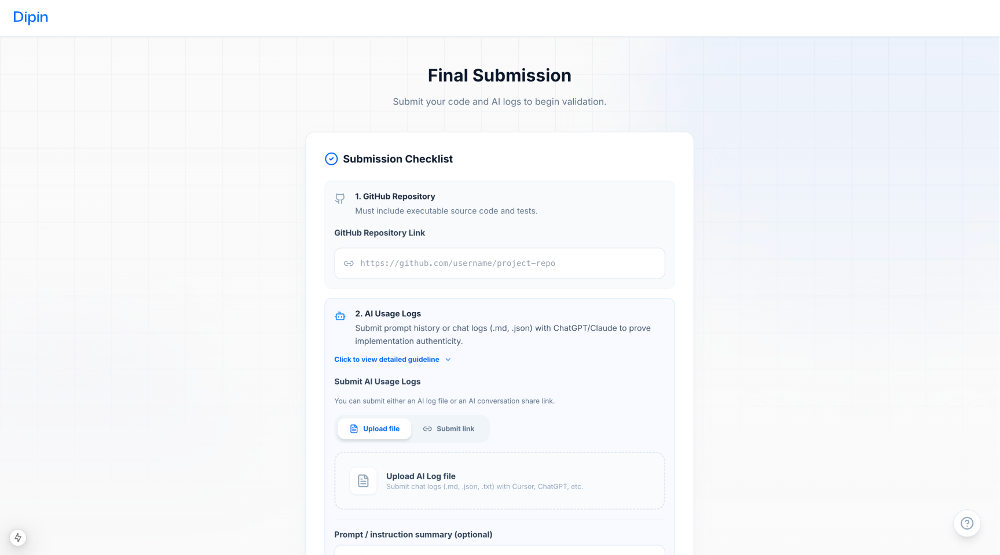

Jan 2026 – Current (Seoul)
Dipin – AI-based Talent Evaluation Platform
An AI-based talent evaluation platform that assesses real-world problem-solving skills through scenario-based tasks and structured evaluation reports.
Overview
Dipin is an AI-driven platform designed to evaluate talent through realistic scenario-based tasks rather than traditional resume screening. Candidates solve practical problems while the system collects interaction data, code submissions, and prompt logs to generate structured evaluation reports.
The goal is to make hiring decisions more evidence-based by measuring how people think, debug, and communicate in real problem-solving situations.
Tech Stack
Architecture Diagram

ERD

System Flow

- User starts a scenario-based evaluation task.
- Frontend captures interactions, code submissions, and prompt logs.
- Backend APIs process the data and run evaluation pipelines.
- The system generates structured scoring and feedback reports.
Product Walkthrough





Key Features
- Scenario-based talent evaluation tasks
- Real-time scoring and analysis
- Structured evaluation report generation
- Code and prompt log processing pipelines
- AWS-based production deployment
My Contributions
- Built full-stack features using FastAPI and Next.js to support real-time scoring, analysis, and report generation.
- Designed and deployed backend infrastructure on AWS (EC2, S3, API Gateway, Docker) for scalable, production-ready architecture.
- Implemented RESTful APIs and data pipelines to process user-generated code and prompt logs for automated evaluation.
- Accelerated development by orchestrating AI tools (Cursor, Claude, Gemini) for rapid prototyping, refactoring, and debugging.
Challenges
- Designing evaluation flows that feel realistic while still producing structured, comparable scoring data.
- Building reliable pipelines for mixed input types such as code logs, prompts, and report outputs.
- Balancing fast iteration with production concerns like AWS deployment, scalability, and maintainable API design.
What I Learned
- How to connect frontend product flows with backend evaluation pipelines in an AI-native product.
- Practical AWS deployment patterns for shipping a production-ready service with Docker-based infrastructure.
- How AI-assisted workflows can speed up prototyping without sacrificing end-to-end ownership of the system.